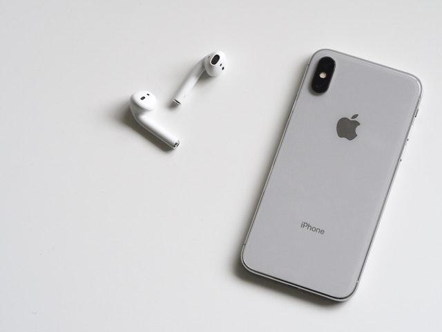

Tesla Phone: como seria o celular da marca de Elon Musk?
Elon Musk é uma das figuras mais proeminentes de nossa geração. Após mandar foguetes ao espaço com a SpaceX, lançar carros elétricos de ponta com a Tesla e até mesmo comprar o Twitter, a internet ainda se pergunta como seria um celular desenvolvido pelo homem mais rico do mundo.
Se Musk realmente fosse lançar um celular, a aposta principal certamente seria de que a empresa por trás do desenvolvimento seria a Tesla, mesmo estando voltada ao segmento automobilístico e de painéis solares. Enquanto o bilionário e a Tesla jamais anunciaram interesse em trabalhar em um smartphone, os fãs já imaginaram conceitos de como seria o aparelho.
Conceitos do Tesla Phone
Para começo de conversa, o Tesla Phone, como é conhecido, só ganhou vida até hoje em um vídeo conceitual do canal ADR Studio, no YouTube, que não possui ligações com a marca ou Elon Musk. A produção mostra renderizações de como seria um possível celular feito por Elon Musk e suas companhias.
As funcionalidades apresentadas no conceito são realmente interessantes, como uma veloz conexão via satélite com a internet Starlink, câmeras poderosas para tirar fotos estelares do espaço, carregamento via energia solar e integração com implantes neurais.
O youtuber ainda foi além e depois publicou outro vídeo. Desta vez, a produção conceitual mostra como seria o unboxing do produto, que ainda chegaria com fones de ouvido — algo bastante "antiquado" na indústria mobile, considerando o comportamento de marcas como Apple e Samsung.
Muitos desses recursos são incríveis na teoria, mas, na prática, a história é outra. A conexão com a Starlink, embora seja totalmente possível, exigiria um custo gigantesco por conta da conectividade via satélite. Implantes de chips no corpo humano para controlar gadgets com a mente não soam tão bem quanto parecem, e ainda devemos estar longe de conseguir o feito de forma estável e barata.
As câmeras poderosas e o carregamento com energia solar fazem bastante sentido. Considerando os avanços da tecnologia, que já aparecem até no controle remoto de TVs, existe a chance da solução aparecer em celulares futuramente.

Tecnologia
Como reconhecer iPhone falso? 7 dicas para saber se é original
O Tesla Phone será lançado por Elon Musk?
Mesmo com as ideias extravagantes que ganharam a atenção dos fãs da marca, o conceito do Tesla Phone pode nunca ganhar vida. Ainda em 2020, Elon Musk publicou no Twitter que não pretende investir em celulares ou relógios inteligentes. Para o bilionário, os acessórios já são tecnologias ultrapassadas e que não merecem seus investimentos — pelo menos essa era a posição do bilionário na época.
"Definitivamente não. Smartwatches e celulares são tecnologias do passado. Neuralinks são o futuro", disse Musk em resposta a uma notícia especulativa.
Com isso em mente, pode ser que o Tesla Phone jamais ganhe vida para recarregar sua bateria no sol, controlar implantes da Neuralink e receber sinais de internet da Starlink. Uma pena, já que a SpaceX não para de lançar satélites para o espaço.